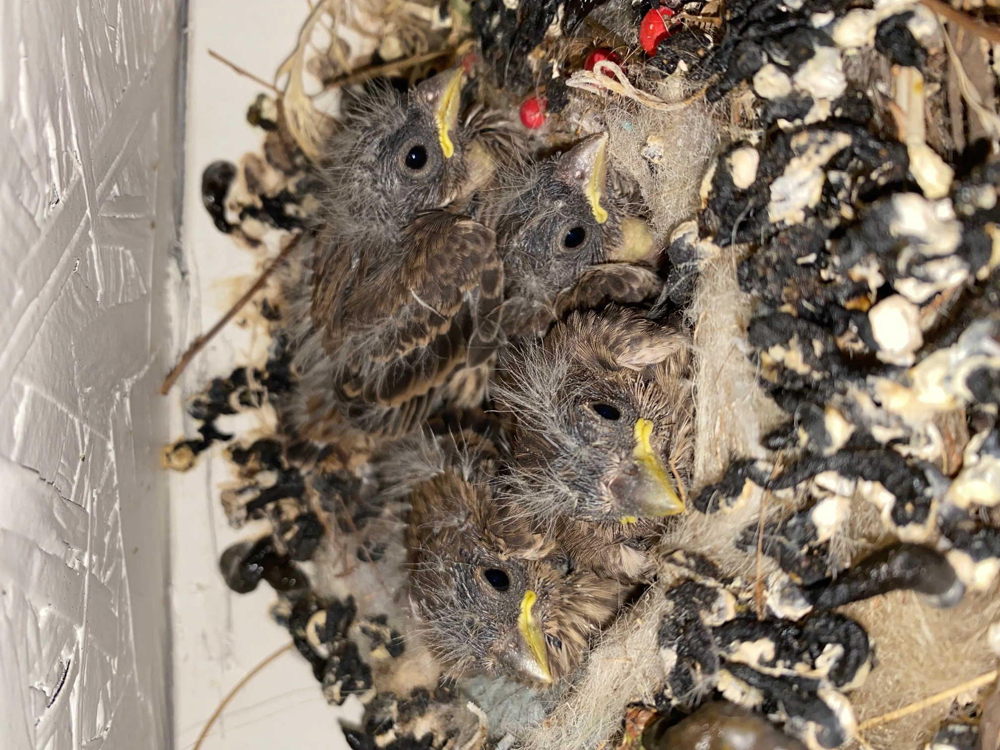
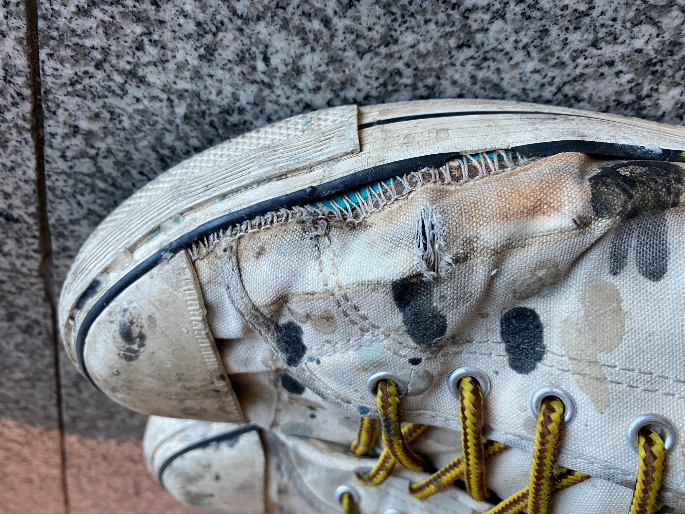
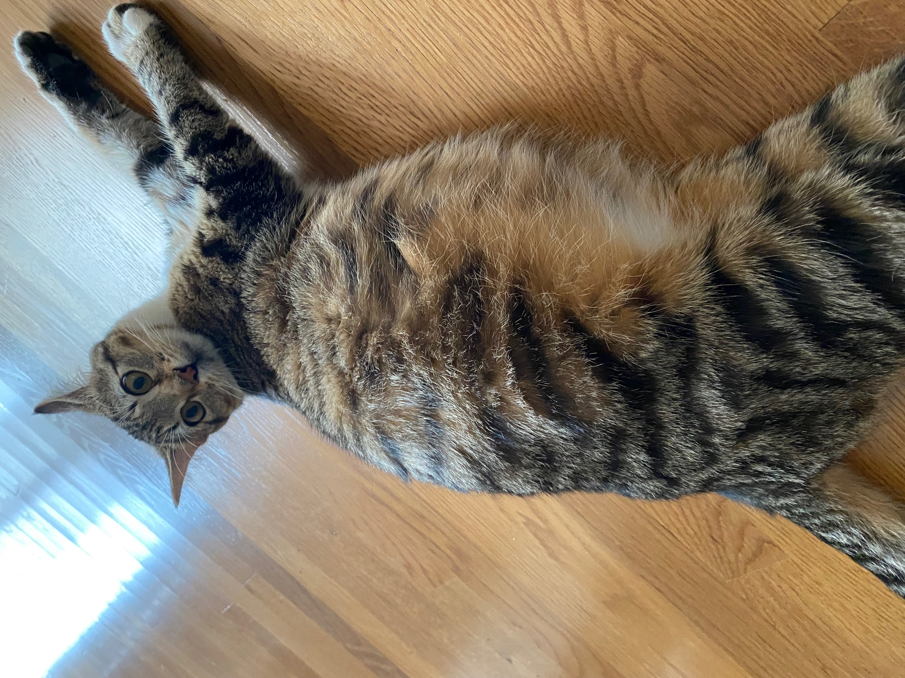
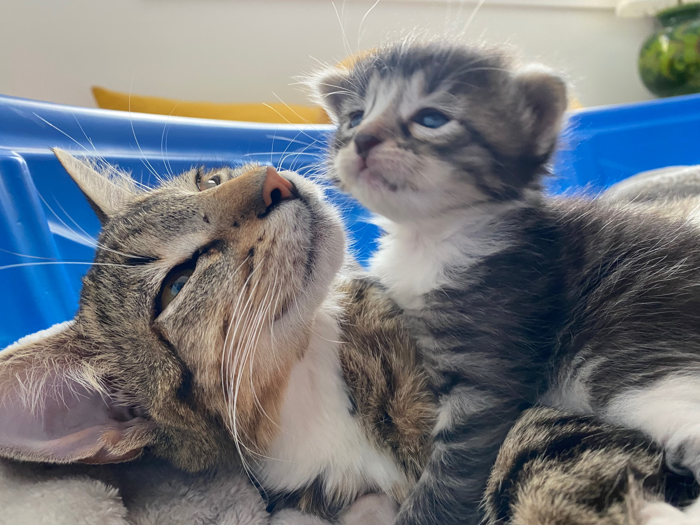
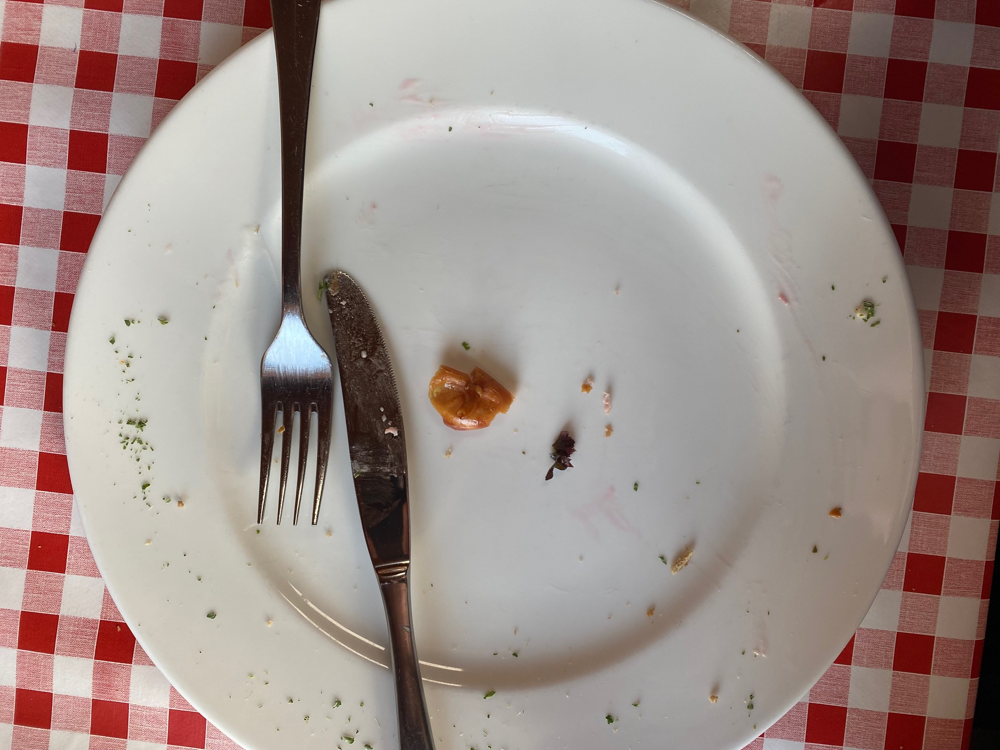

Before
and
After
Everytime spring came around in California, a bird nest would appear in the eaves outside my bedroom window. I've always wondered if it was the same family coming back to build a nest each year.
These converse were the only shoes that I wore for almost a year. They were with me through love and heart break. I wore them while I layed fiberglass on surfboard blanks. I wore them to the store. Eventually they broke and so I threw them away.
This is my cat Rodger. We thought she was a boy until she got pregnant. I still feel kind of guilty that she has to go around being called Rodger.. She wasn't even a year old when she involuntarily became a mother. I feel kind of guilty about that too.
This is Rodger and her kitten only a few days after she had them. She had seven of them and spent every moment with them—sometimes forgetting to eat. Of course we couldn't keep seven cats so we gave them away to friends and relatives. She was really depressed for maybe two weeks? But then I guess she forgot because she's fine now. I often wonder if she thinks about her kids.
I couldn't help but laugh when the waiter brought me this plate. Honestly, the staff might have been laughing too because they weren't very welcoming at this restaurant. There were multiple times while traveling in Switzerland that I blindly ordered food off of the non-English menu. I don't remember what this was called or what I thought I was going to recieve, but I guess it tasted good enough for me to finish it.
